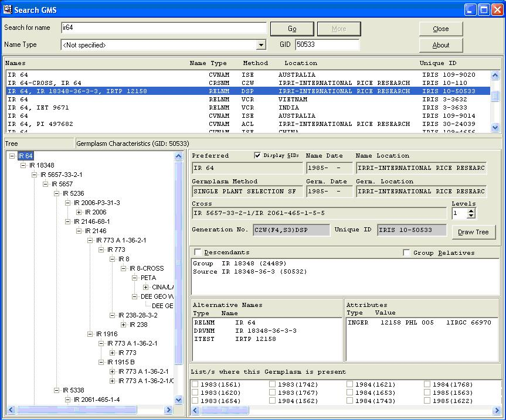
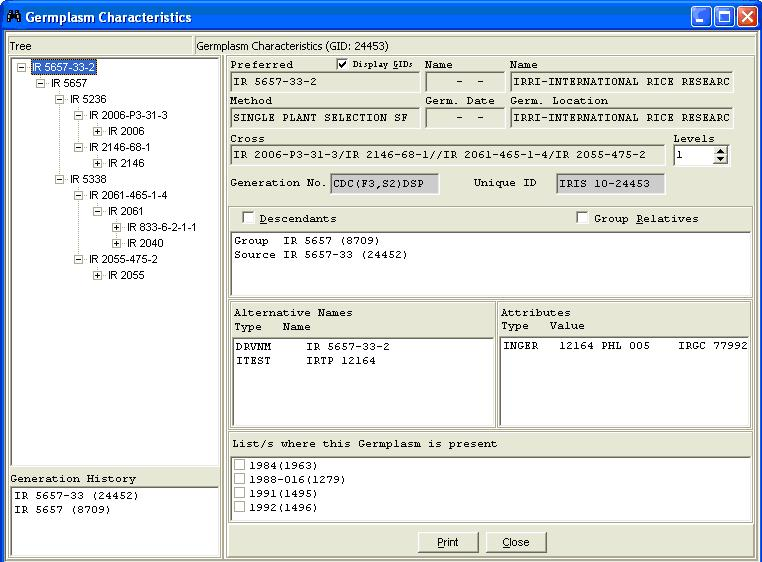

TDM GMS SEARCH
From ICISWiki
A. APPLICATION PROGRAMS
1.APPLICATIONS OF THE GENEALOGY MANAGEMENT SYSTEM
C.G. McLaren, L. Ramos, C. Lopez, W. Eusebio
THE GMS SEARCH APPLICATION
The GMS SEARCH program performs name searches in the GMS. A search string may contain wildcard characters ‘_’ and ‘%’. Use the underscore character, ‘_’, to represent any single character at a specific position in the name. Use the percent sign, ‘%’, to represent any string starting where the ‘%’ is located. For example, ‘IR 43%’ performs a name search on all germplasm whose names start with ‘IR 43’, including ‘IR 43.’
To perform a name search, enter the search string with or without wildcard characters, and click <Go>. Results are displayed in the listbox below the name, with the first search match highlighted. Results of a search are displayed 20 at a time (Figure 1.2.1). If more hits exist after every 20 hits, the <More> button appears in place of <Go>. Click <More> to retrieve the next 20 hits. Otherwise, enter another name to search in the space provided and click <Go>. Entering another name, with the <More> button showing automatically changes to it to <Go>.
If the germplasm ID is known, it can be specified in the Retrieve GID field, instead of its name. A name search is no longer performed; instead, the germplasm record is retrieved and its characteristics displayed in the window. If the specified GID has been replaced with another, the replacement germplasm appears in the window instead.
The following are basic rules when using wildcard characters:
- The ‘_’ can appear in any specified position of a search string: at the beginning (i.e., ‘_R 43’, at the end (i.e., ‘IR 4_’), or anywhere between the start and end positions (i.e., ‘IR _3’).
- A search string can contain more than one ‘_’, or can be used together with ‘%’. The following are valid search strings: ‘IR 15__5’, ‘IR 1_6_1’, ‘IR __’, ‘IR 4861_-%’.
- The ‘%’ should only be placed at the end of a search string. Placing the ‘%’ at the beginning or in the middle of a search string results in an indefinite name search. The application will have to be terminated abnormally.
GMS SEARCH looks for name matches to the search string exactly as it is typed, allowing for wild characters, and after the name standardizations (3.4.2) have been applied to the string.
If a name type is specified in the name type field, those germplasm records having a name with the specified type appears.
Figure 1.2.1 GMS Search

The family tree for the selected hit can be expanded. Initially, only the root, which corresponds to the highlighted entry in the listbox is displayed. The germplasm characteristics displayed correspond to the highlighted name in the tree.
Expand the tree by clicking on the (+) sign to the left of a name. Any name anywhere in the tree can be expanded unless its sources are unknown. To display the characteristics of a name, highlight the desired name in the tree.
The displayed characteristics of a name include: preferred name, method of genesis, name date and location, germplasm date and location, and cross expansion. All names associated with the germplasm are displayed. Any existing attributes are displayed as well. A germplasm’s sources, i.e., parents for a generative method or group and source for a derivative method, are displayed in the Relatives list box.
The no. of levels of a displayed cross expansion appears to the right of the cross expansion. To view a cross expansion at a different level, change the levels counter to the desired value. The cross expansion is displayed up to the no. of levels specified, or the highest no. of levels possible, whichever is lower.
All germplasm descendants, or just those belonging to the same group can be displayed. To display a germplasm’s descendants, click the Descendants option. All derivatives or offspring are searched and displayed. To display a germplasm’s group relatives, click the Group Relatives option. A germplasm’s relatives, i.e., derivatives or sister lines, are searched and displayed. To display only the sources, uncheck the ‘Descendants’ or ‘Group Relatives’ option.
Figure 1.2.2. View Germplasm Relative Characteristics

Characteristics of any of the displayed relatives can also be viewed. To display a relative’s characteristics, highlight the relative whose characteristics are to be viewed, right-click and select <View Characteristics>. A window similar to Figure 1.2.2 appears. The displayed characteristics are those of the highlighted relative from the previous (Figure 1.2.1) window. The characteristics displayed are the same as those in Figure 1.2.1. Similarly, characteristics of any of the relatives appearing in the Relatives list box can also be displayed by highlighting the desired name.
You can also view the Alternative Names, Attribute, and the List/s where the Germplasm is present.
To print the displayed characteristics, click <Print>.
In either window, the GIDs associated with a germplasm and its sources may be displayed by checking the ‘Display GIDs’ option. Uncheck the option to hide GIDs.
If any of the characteristics cannot be completely viewed in the space provided, place the mouse over the specific characteristic’s value. A hint window appears, displaying the complete value.
The height or width of the tree window can be increased or decreased as needed. To change the height of the tree window, place the mouse at the bottom border of the results listbox, and when the cursor changes shape, click on the mouse. While keeping the mouse clicked, move it up or down, as needed. Similarly, change the width of the tree window by placing the mouse between the borders of the tree window and germplasm characteristics’ window and move the mouse to the left or right as needed.
To exit GMS Search, click <Close> or press <Esc>.